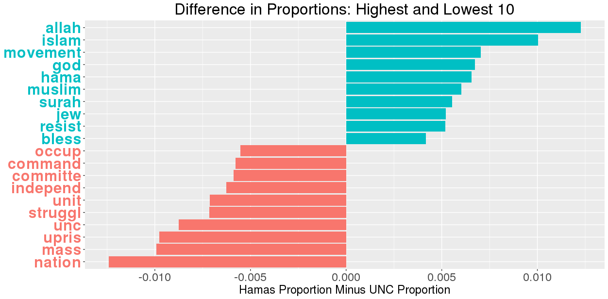

Week 3: Frequency Analysis
Jeff Jacobs
November 15, 2018
Text Analysis 101
This session is essentially “Text Analysis 101”, in that it contains steps you’re going to perform basically no matter what particular text analysis method you’re hoping to use. The basic pipeline for a text-analysis project (at least, for a one-off text corpus analysis) looks like: [if you’re rendering this tutorial manually, you’ll need to install theGmisc package to generate this diagram]
library(grid)
library(Gmisc)
# Set arrow options
options(connectGrobArrow =
arrow(ends="last", type="closed",
length=unit("3","mm"),
angle="20"))
# set some parameters to use repeatedly
leftx <- .25
midx <- .5
rightx <- .75
width <- .75
height <- 0.08
box_opt <- gpar(fill = "lightgrey")
txt_opt <- gpar(cex=1.1, fontface="bold")
# create boxes
h_inc <- 0.12
(csv <- boxGrob("Unstructured text (\"out in the world\")",
x=midx, y=0.82, box_gp = box_opt, txt_gp=txt_opt, width = width, height=0.08))
(df <- boxGrob("Organized text w/metadata",
x=midx, y=0.70, box_gp = box_opt, txt_gp=txt_opt, width = width, height=height))
# connect boxes like this
connectGrob(csv, df, "v")
(corpus <- boxGrob("Text and metadata loaded into an R variable",
x=midx, y=0.58, box_gp = box_opt, txt_gp=txt_opt, width = width, height=height))
connectGrob(df, corpus, "N")
(preproc <- boxGrob("Text preprocessing",
x=midx, y=0.46, box_gp = box_opt, txt_gp=txt_opt, width = width, height=height))
connectGrob(corpus, preproc, "v")
(dtm <- boxGrob("Conversion to numeric data\n(Document-Term Matrix (DTM))",
x=midx, y=0.3, box_gp = box_opt, txt_gp=txt_opt, width = width, height=2*height))
connectGrob(preproc, dtm, "N")
(freq <- boxGrob("Text-as-data methods\n(Transformations of DTM)",
x=midx, y=0.1, box_gp = box_opt, txt_gp=txt_opt, width = width, height=2*height))
connectGrob(dtm, freq, "v")
With that said, there’s a more limited “easy way” and a more versatile “hard way” to do these basic steps.
The easy way will let you get up and running and learning some rudimentary things about your text corpus in… less than 30 minutes? This easy way is achieved using thetm package in R, short for “Text Mining”. In a nutshell, this package has a pipeline that looks like:
library(grid)
library(Gmisc)
grid.newpage()
# set some parameters to use repeatedly
leftx <- .25
midx <- .5
rightx <- .75
width <- .4
box_opt <- gpar(fill = "lightgrey")
txt_opt <- gpar(cex=1.1, fontface="bold")
# create boxes
(csv <- boxGrob("Corpus in csv format",
x=midx, y=0.85, box_gp = box_opt, txt_gp=txt_opt, width = width, height=0.08))
(df <- boxGrob("data.frame",
x=midx, y=0.7, box_gp = box_opt, txt_gp=txt_opt, width = width, height=0.08))
# connect boxes like this
connectGrob(csv, df, "v")
(corpus <- boxGrob("Corpus object",
x=midx, y=0.55, box_gp = box_opt, txt_gp=txt_opt, width = width, height=0.08))
connectGrob(df, corpus, "N")
(preproc <- boxGrob("Preprocessing",
x=midx, y=0.4, box_gp = box_opt, txt_gp=txt_opt, width = width, height=0.08))
connectGrob(corpus, preproc, "v")
(dtm <- boxGrob("DocumentTermMatrix",
x=midx, y=0.25, box_gp = box_opt, txt_gp=txt_opt, width = width, height=0.08))
connectGrob(preproc, dtm, "N")
(freq <- boxGrob("Frequency analysis",
x=midx, y=0.1, box_gp = box_opt, txt_gp=txt_opt, width = width, height=0.08))
connectGrob(dtm, freq, "v")
In words: you start with your corpus in a basic data format and load it into a dataframe object using the functions you’ve learned (either R’s built-in read.csv() or the better alternative fread() from the data.table package). You then use tm’s Corpus function to convert the datatable into a Corpus object. Next you “convert” this Corpus into numerical form via DocumentTermMatrix() (again from tm), and perform whatever analysis you want on this Document-Term Matrix (DTM).
Here I want to point out that most text-as-data methods can actually be boiled down to just fancy transformations on a DTM. Both Latent Semantic Analysis (LSA), one of the earliest text-as-data methods (and the precursor to topic models, which use a variant called Latent Dirichlet Allocation (LDA)) and word embeddings, for example, transform this matrix so that the rows of the resulting matrix represent topics (in the LSA case) or words (in the word embedding case). Onto the code!
Using the textmining (tm) package
First things first, you’re going to need to install tm by running install.packages("tm") from the Console. Once it’s installed, you can load it into R’s working memory at any time by including library(tm) at the top of your code.
Loading data from .csv
Let’s begin by loading our csv file into an R dataframe. Just like last week, I use fread(<filename>) to load the data and store the resulting dataframe into a variable called UN_speeches (you’ll see why we’re using the _ascii version later on):
library(data.table)
UN_speeches <- fread("corpora/UNGDC_2017_ascii.csv")
# Use -8 for the column filter to exclude column 8,
# so that it doesn't print out all the (long) speeches
head(UN_speeches[,-8])## id folder_name file_name file_prefix session_num year
## 1: 7701 Session 72 - 2017 AFG_72_2017.txt AFG_72_2017 72 2017
## 2: 7702 Session 72 - 2017 AGO_72_2017.txt AGO_72_2017 72 2017
## 3: 7703 Session 72 - 2017 ALB_72_2017.txt ALB_72_2017 72 2017
## 4: 7704 Session 72 - 2017 AND_72_2017.txt AND_72_2017 72 2017
## 5: 7705 Session 72 - 2017 ARE_72_2017.txt ARE_72_2017 72 2017
## 6: 7706 Session 72 - 2017 ARG_72_2017.txt ARG_72_2017 72 2017
## country_code res res_count
## 1: AFG 1 196
## 2: AGO 1 196
## 3: ALB 1 196
## 4: AND 1 196
## 5: ARE 1 196
## 6: ARG 1 196Constructing the Corpus object
Next we want to tell tm that the data in this dataframe is actually text data that we want it to work with. To do this, we use its Corpus() function, which requires a source argument. This source argument can be one of: VectorSource, DataframeSource, or DirSource. Hopefully these are fairly self-explanatory, but just in case:
VectorSourcetakes in just a vector of strings (e.g.,c("first text","here's the second text","a third text")) and treats each string as a text document,DataframeSourcetakes in an entire dataframe, with one column specified as the column holding your text documents, and treats the remaining columns as metadata, andDirSourcetakes in the path to a directory (e.g.,"C:\\Documents\\My_Corpus"), loads all.txtfiles within that directory into memory, and treats the contents of each file as a text document.
In this case, we’re going to use DataframeSource, since it will let us tell tm about both the text data and the (numeric or categorical) metadata in one go. However, you’ll get an error trying to use the dataframe as-is:
library(tm)
UN_corpus <- Corpus(DataframeSource(UN_speeches))## Error in inherits(x, "Source"): all(!is.na(match(c("doc_id", "text"), names(x)))) is not TRUEIt looks scary, but all it’s saying is “I was looking for a column named doc_id and a column named text, and didn’t find them in your dataframe”. As the documentation for DataframeSource mentions: “The first column must be named ‘doc_id’ and contain a unique string identifier for each document. The second column must be named ‘text’”. It’s probably easiest to use country_code as our unique id variable, so we rename that column to doc_id, and we’re good:
# Use 7 since country_code is the *seventh* column
names(UN_speeches)[7] <- "doc_id"
# Check that our rename worked
names(UN_speeches)## [1] "id" "folder_name" "file_name" "file_prefix" "session_num"
## [6] "year" "doc_id" "text" "res" "res_count"Now our above code should work:
UN_corpus <- Corpus(DataframeSource(UN_speeches))
UN_corpus## <<SimpleCorpus>>
## Metadata: corpus specific: 1, document level (indexed): 8
## Content: documents: 196This tells us two things:
- That our corpus contains 196 documents, and
- That we have 8 metadata variables, on top of the
doc_idandtextcolumns.
So now our Corpus object is ready to use. Just as a sanity check (or, if this is the first time you’re looking at the corpus, to get your bearings), you can use the double-square-brackets notation [[<doc_num>]] on your Corpus object to access the text for a particular document. However, you will get an error if you try just the double-brackets:
UN_corpus[[5]]## <<PlainTextDocument>>
## Metadata: 7
## Content: chars: 13929What this means is that R doesn’t understand UN_corpus[[5]] as a string. The issue is that tm is keeping track of additional information above and beyond just the text, and all of this data is given to you when you use the double-brackets. So what you need to do is “drill down” to just the text, which is stored in the content field within the object that the double-brackets gives you:
doc5_data <- UN_corpus[[5]]
doc5_text <- doc5_data$content
# Just show the first 500 characters in the document
substr(doc5_text,1,500)## [1] "I would like to begin by congratulating the President on his leadership of the General Assembly at its seventy-second session. We are confident that his deep experience in international affairs will contribute to the Assembly??s success, and we stand ready to provide him with all the support and cooperation he may need. I would also like to thank his predecessor, Mr. Peter Thomson, for his stewardship of the previous session. I would also like to take this opportunity to express my country??s ap"# And display our metadata
doc5_data$meta## author : character(0)
## datetimestamp: 2019-02-16 16:30:15
## description : character(0)
## heading : character(0)
## id : ARE
## language : en
## origin : character(0)For sanity purposes, I define a simple peek_textnum() function now, so that we don’t have to worry about the square-bracket or $content or substr() stuff anymore:
peek_textnum <- function(corpus, doc_num, start_char, end_char){
doc_data <- corpus[[doc_num]]
doc_text <- doc_data$content
doc_head <- substr(doc_text, start_char, end_char)
return(doc_head)
}So now we can print (for example) the first 300 characters of the 10th document by running:
peek_textnum(UN_corpus, 10, 1, 300)## [1] "The world has never felt more insecure, at least not in my lifetime. Three years ago, when I first spoke from this rostrum, I was concerned about three serious challenges. First, violent conflict had returned to Europe with the crisis in and around Ukraine. Secondly, with the success of Da??esh in I"Although this is useful for sanity checks, typically we’d like to be able to view the text for a specific country we are interested in. For this, I write a separate function peek_country(), which takes a country code as its first parameter, finds the document number for that country, and passes it onto peek_textnum(). Note that the meta() function, e.g. meta(UN_corpus), “pulls out” just the metadata table for our corpus, which has a country_code variable:
peek_country <- function(corpus, country_code, start_char, end_char){
country_data <- corpus[[country_code]]
country_text <- country_data$content
doc_head <- substr(country_text, start_char, end_char)
return(doc_head)
}So now we can do things like:
peek_country(UN_corpus, "VEN", 1, 280)## [1] "We address the General Assembly at its seventy-second session in the name of the constitutional President of the Bolivarian Republic of Venezuela, Nicolas Maduro Moros, and thus in the name of a sovereign, peace-loving people that believes in respect among nations and compliance "One final thing: if you’re lazy like me and want to get a list of the country codes without having to open the .csv or click the spreadsheet icon in the Environment panel, just use names() to look at the names of each document:
names(UN_corpus)## [1] "AFG" "AGO" "ALB" "AND" "ARE" "ARG" "ARM" "ATG" "AUS" "AUT" "AZE"
## [12] "BDI" "BEL" "BEN" "BFA" "BGD" "BGR" "BHR" "BHS" "BIH" "BLR" "BLZ"
## [23] "BOL" "BRA" "BRB" "BRN" "BTN" "BWA" "CAF" "CAN" "CHE" "CHL" "CHN"
## [34] "CIV" "CMR" "COD" "COG" "COL" "COM" "CPV" "CRI" "CUB" "CYP" "CZE"
## [45] "DEU" "DJI" "DMA" "DNK" "DOM" "DZA" "ECU" "EC" "EGY" "ERI" "ESP"
## [56] "EST" "ETH" "FIN" "FJI" "FRA" "FSM" "GAB" "GBR" "GEO" "GHA" "GIN"
## [67] "GMB" "GNB" "GNQ" "GRC" "GRD" "GTM" "GUY" "HND" "HRV" "HTI" "HUN"
## [78] "IDN" "IND" "IRL" "IRN" "IRQ" "ISL" "ISR" "ITA" "JAM" "JOR" "JPN"
## [89] "KAZ" "KEN" "KGZ" "KHM" "KIR" "KNA" "KOR" "KWT" "LAO" "LBN" "LBR"
## [100] "LBY" "LCA" "LIE" "LKA" "LSO" "LTU" "LUX" "LVA" "MAR" "MCO" "MDA"
## [111] "MDG" "MDV" "MEX" "MHL" "MKD" "MLI" "MLT" "MMR" "MNE" "MNG" "MOZ"
## [122] "MRT" "MUS" "MWI" "MYS" "NAM" "NER" "NGA" "NIC" "NLD" "NOR" "NPL"
## [133] "NRU" "NZL" "OMN" "PAK" "PAN" "PER" "PHL" "PLW" "PNG" "POL" "PRK"
## [144] "PRT" "PRY" "PSE" "QAT" "ROU" "RUS" "RWA" "SAU" "SDN" "SEN" "SGP"
## [155] "SLB" "SLE" "SLV" "SMR" "SOM" "SSD" "STP" "SUR" "SVK" "SVN" "SWE"
## [166] "SWZ" "SYC" "SYR" "TCD" "TGO" "THA" "TJK" "TKM" "TLS" "TON" "TTO"
## [177] "TUN" "TUR" "TUV" "TZA" "UGA" "UKR" "URY" "USA" "UZB" "VAT" "VCT"
## [188] "VEN" "VNM" "VUT" "WSM" "YEM" "YUG" "ZAF" "ZMB" "ZWE"Before we can move to the step of constructing our Document-Term Matrix, however, we’ll need to do some initial preprocessing of the data.
Preprocessing: Caveat Utilitor
Preprocessing is probably the most-ignored part of the text processing pipeline. However, as Denny and Spirling (2018) has shown convincingly (and scarily), it’s possible to diminish or even reverse your results by using a sufficiently “bad” preprocessing pipeline:

So just keep this graph on the front of your mind whenever you are running the preprocessing step D: As a final point before we start coding, we need to understand what the end goal is. And to understanding this we need to understand how computers “read” text, which is where the “Bag-of-Words Assumption” comes in.
The Bag-of-Words Assumption (Why?)
Long story short, for most social science applications of text-as-data (the opposite is true for linguistics applications, so if you’re a linguist close the window right now), we make a scary but important simplifying assumption: the Bag-of-Words Assumption. What this means, as its name implies, is that we take all of the words out of a document and toss them into a “bag”: just as object lose their ordering when we toss them into a bag, the words in the document lose their ordering when we toss them into our metaphorical bag:

The rationale here is basically that whatever semantic information we lose by tossing word order out the window, we more than make up for it with what we gain in terms of the computer’s ability to draw general semantic inferences. To understand why, let’s take the example of a computer trying to make an inference regarding the similarity between the sentence “I love cats!” and “Cats are lovely.”. To humans, obviously, these are quite semantically “close”, only differing in that the former is being exclaimed while the latter is just being stated.
Now think about how the computer would have to represent these sentences if we wanted it to retain order. It would need a way to represent information about both the words and their order. Due to the architecture of a computer, all information eventually boils down to vectors – lists of numbers1. The first sentence would then need to be stored in such a way that the computer retains all of the word-order information, for example via:
sentence1 <- c("I_1","love_2","cats_3","!_4")
sentence1## [1] "I_1" "love_2" "cats_3" "!_4"sentence2 <- c("Cats_1","are_2","lovely_3","._4")
sentence2## [1] "Cats_1" "are_2" "lovely_3" "._4"Now if you look closely at these two lists, you’ll realize that they actually have nothing in common as-is. The computer, in this example, can only take its “units” of meaning – the elements of the lists – and test their overlap (remember that a word+order is a unit here. If we wanted it to look at the letters we’d need a different encoding, say sentence1 <- "I_1"," _2","l_3","o_4","v_5","e_6",..., and this would be even worse if you think through it…). Using a standard vector distance metric, the Jaccard index, here’s what we get:
compute_jaccard <- function(A, B){
numerator <- length(intersect(A,B))
denominator <- length(union(A,B))
jaccard <- numerator / denominator
return(jaccard)
}
compute_jaccard(sentence1,sentence2)## [1] 0But this means something is wrong, since we definitely want the computer to detect the semantic similarity here. But no matter what, if we require the computer to retain order, it can’t detect any similarities. For example, let’s do some standard preprocessing steps (lowercasing, removing punctuation, and stemming, i.e., reducing words down to their “root” forms: "jumping" and "jumper" both get transformed to "jump"):
sentence1 <- c("i_1","love_2","cats_3")
sentence1## [1] "i_1" "love_2" "cats_3"sentence2 <- c("cats_1","are_2","love_3")
sentence2## [1] "cats_1" "are_2" "love_3"compute_jaccard(sentence1,sentence2)## [1] 0Still no matches. But now let’s remove the word order:
sentence1 <- c("i","love","cats")
sentence1## [1] "i" "love" "cats"sentence2 <- c("cats","are","love")
sentence2## [1] "cats" "are" "love"compute_jaccard(sentence1,sentence2)## [1] 0.5Awesome. Now even with just three words per sentence, and two sentences total, we were able to derive some meaningful inference about the semantics of the sentences. I know this is a toy example, but its what’s at the heart of the bag-of-words assumption: that processing a bag-of-words is a farrrr more efficient use of the information in the sentence than if we treat (for example) “cats” in the first slot as a completely different unit from “cats” in the third slot.
Also, now you can hopefully see why this would be a bad assumption for linguists: if you’re trying to parse a sentence, for example to derive its dependency tree, we have the opposite situation: now we use the information in the sentence in a maximally efficient way by retaining word order, and if we remove order we get no information we can use to obtain the outcome we want. So the moral of the whole story is that bag-of-words is not a “universal” assumption in linguistics or anything like that, just a heuristic used in computer science and computational social science to allow us to efficiently draw the inferences that we want to draw. Dependency trees are less social-scientifically useful than, for example, a distribution of policy positions derived from a corpus of political manifestos.
The Preprocessing Pipeline (How?)
In the figure from Denny and Spirling (2018) above, each tiny row represents one of 128 different combinations of preprocessing steps. Each preprocessing step can either be “turned on” or “turned off”, i.e., there are two choices for each slot in the pipeline, which means that they use \(\log_2(128) = 7\) different preprocessing steps. Looking inside the paper (Section 2, pages 170-172), we see that the steps are:
- Punctuation Removal: Self-explanatory
- Number Removal: Any digits, from 0 to 9, are removed.
- Lowercasing: Self-explanatory
Stemming: As mentioned above, words are “reduced” to their linguistic root form. Note however that the transformations are often extremely unintuitive. When I was doing my Bayanat (Communiques from the First Intifada) project, the stemmer collapsed “uniting”, “united”, and “unites” down to “uniti”, but “unite” down to “unit”, making (for example):
\(\textsf{Similarity}(\texttt{"units of measurement"},\texttt{"let us unite!"}) > \textsf{Similarity}(\texttt{"we must unite!"},\texttt{"we must be united!"})\)
So yeah, be careful about this step.Stopword Removal: Possibly the most “controversial” step. In fact there are whole papers by well-respected text-as-data experts (Schofield, Magnusson, and Mimno (2017)) saying that you shouldn’t remove stopwords. I personally don’t buy their argument (it does improve literally all the metrics across the board and they’re making an arbitrary distinction between “small” and “large” improvements) but you should definitely think about it when you’re on this step.
N-Gram Inclusion: An “n-gram” is an ordered sequence of \(n\) words pulled out of a sentence. Including these – say 1-grams (words), 2-grams (pairs of words), and 3-grams (triples of words) – does mitigate some of the fears of people who think we need to include word order. However, it can also exponentiate the amount of (text) data you need to process: Including 2-grams adds an order of magnitude more “tokens”:
\[\binom{n}{2} = \frac{n^2-n}{2} = O(n^2)\]
while including 3-grams adds an additional order of magnitude:
\[\binom{n}{3} = \frac{n^3-3n^2+2n}{6} = O(n^3)\].
So I personally usually don’t include n-grams unless my corpus is really really big… like (say) over 50,000 documents. Also note that tweets don’t count as full “documents”, since a “good” document length for topic modeling (to choose just one popular text-as-data method) is about 1000 words. See Boyd-Graber, Hu, and Mimno (2017) or Jockers (2013) for why.Removing Infrequent Terms: Unlike the stopword removal step, where you specify the words you want to remove, here you just define a threshold – a minimum word frequency – below which the word gets thrown out. So, for example, if you use a 1% threshold (the “commonly used rule of thumb” mentioned in the paper), any word appearing in less than 1% of the documents in the corpus will be thrown out.
So let’s (finally) implement this pipeline in code! The first step in our pipeline will be to remove punctuation via the tm_map() function from the tm package, which we’ll use throughout the preprocessing stage. All it does is take a content transformer that you give it (e.g., the removePunctuation() function) and run it on every document in your corpus separately. However, before we start, there are a few quirks with our data:
The original UNGDC Corpus files used a text encoding called UTF-8 which allowed it to contain accented letters and “fancy” punctuation marks. UTF-8, however, does not play well with tm, which was made to work with the ASCII (“standard” characters) encoding. Thus I made an ASCII-formatted version of the corpus, which replaces all “fancy” characters with two question marks ??, so that they get removed when we remove punctuation. The problem, however, is that if you have a word like "yesterday??s", which is extremely common since the UTF-8 character those ?s replaced was a “curly apostrophe”, this will turn into "yesterdays", which has a completely different meaning. So to avoid this I write a content transformer that removes any "s" characters occurring right after the two question marks:
removeFinalS <- function(x){
# fixed = TRUE is there because we want gsub() to read "??"
# as a string with two question marks rather than a regular
# expression (don't worry about it :/)
return (gsub("??s", "??", x, fixed = TRUE))
}
# And a quick check that it works
removeFinalS("ABC??s")## [1] "ABC??"All this does is take in a string x, look for the sequence "??s", and replace it with "??" if found. So now we use tm_map() to apply it to every document in our corpus (using content_transformer() just to tell tm_map that we want it to “import” removeFinalS into its set of content transformers). I store the result in a new UN_clean variable so that we can compare the output and make sure it filtered correctly:
# Apply removeFinalS() to every document in the corpus
UN_clean <- tm_map(UN_corpus, content_transformer(removeFinalS))
# Check that it worked
peek_country(UN_corpus, "PRT", 1, 200)## [1] "Let me start by expressing Portugal??s condolences to and solidarity with the people and the Government of Mexico for yesterday??s violent tragedy. I wish to congratulate you, Mr. President, on your e"peek_country(UN_clean, "PRT", 1, 200)## [1] "Let me start by expressing Portugal?? condolences to and solidarity with the people and the Government of Mexico for yesterday?? violent tragedy. I wish to congratulate you, Mr. President, on your ele"Now we have one more quick cleanup task: hyphenated words like “peace-keeper” appear a lot in this corpus, so here I create another custom function breakHyphens that just replaces the "-" character with a space, so that e.g. “peace-keeper” becomes the two words “peace” and “keeper” (which, if we included 2-grams, would get “picked up” as an important two-word phrase later in the pipeline):
breakHyphens <- function(x){
# fixed = TRUE is there because we want gsub() to read "??"
# as a string with two question marks rather than a regular
# expression (don't worry about it :/)
return (gsub("-", " ", x, fixed = TRUE))
}
# And a quick check that it works before
breakHyphens("peace-keeper")## [1] "peace keeper"# Applying it to the whole corpus
UN_clean <- tm_map(UN_clean,content_transformer(breakHyphens))And we again quickly check that it worked:
peek_country(UN_corpus, "AFG", 10500, 10800)## [1] "ruction; the Turkmen railway has reached our border; and the Turkmenistan- Afghanistan-Pakistan-India pipeline for natural gas is under construction. As a central part of our plan for economic advancement, we continue to work with our regional partners to seek avenues of collaboration. We can see now"peek_country(UN_clean, "AFG", 10500, 10800)## [1] "the Turkmen railway has reached our border; and the Turkmenistan Afghanistan Pakistan India pipeline for natural gas is under construction. As a central part of our plan for economic advancement, we continue to work with our regional partners to seek avenues of collaboration. We can see now, amid th"Now that we’ve applied these custom functions, we’re ready to begin the “standard” pipeline and remove punctuation using one of tm’s built-in content transformer, removePunctuation:
UN_clean <- tm_map(UN_clean, removePunctuation)It’s a bit underwhelming, since (if it worked) tm doesn’t display anything, so let’s sample a document to make sure that it really did remove all the punctuation:
peek_country(UN_corpus, "PRT", 1, 200)## [1] "Let me start by expressing Portugal??s condolences to and solidarity with the people and the Government of Mexico for yesterday??s violent tragedy. I wish to congratulate you, Mr. President, on your e"peek_country(UN_clean, "PRT", 1, 200)## [1] "Let me start by expressing Portugal condolences to and solidarity with the people and the Government of Mexico for yesterday violent tragedy I wish to congratulate you Mr President on your election I "By the way, the reason I knew we could use removePunctuation as a valid content transformer for tm_map was by looking at the valid transformations list, which you can see by using this function:
getTransformations()## [1] "removeNumbers" "removePunctuation" "removeWords"
## [4] "stemDocument" "stripWhitespace"Next, we remove numbers and check that it worked again:
UN_clean <- tm_map(UN_clean, removeNumbers)
peek_country(UN_corpus,"RUS",1,100)## [1] "In December of last year, the General Assembly adopted resolution 71/190, on the promotion of a demo"peek_country(UN_clean,"RUS",1,100)## [1] "In December of last year the General Assembly adopted resolution on the promotion of a democratic a"Lowercasing all letters. This one is a bit weird since tm doesn’t have a built-in lowercaser – so we could try to “import” R’s built-in tolower() function into tm_map(). But here we can be a little “safer”: tolower() is unable to handle “special” (unicode) characters, like the accents in tokens like “Miroslav Lajčák”, the last President of the UNGA. So instead (in case we decide to enter “hard mode” in the future by using the full fancy-characters version) we import the special-character-friendly stri_trans_tolower() function from the stringi library (install.packages("stringi") if you haven’t downloaded it):
library(stringi)
UN_clean <- tm_map(UN_clean, content_transformer(stri_trans_tolower))
peek_country(UN_corpus, "YEM", 1, 200)## [1] "On behalf of the Government and the people of Yemen, I sincerely congratulate the President and his friendly nation, Slovakia, on assuming the presidency of the General Assembly at its seventy-second "peek_country(UN_clean, "YEM", 1, 200)## [1] "on behalf of the government and the people of yemen i sincerely congratulate the president and his friendly nation slovakia on assuming the presidency of the general assembly at its seventy second ses"Note that this function doesn’t complain when it sees “Miroslav Lajčák”, and it will even smoothly capitalize the accented characters as appropriate:
stri_trans_tolower("Miroslav Lajčák")## [1] "miroslav lajčák"stri_trans_toupper("Miroslav Lajčák")## [1] "MIROSLAV LAJČÁK"Stemming comes next. For this step we also import a function, this time the stemDocument() function from the SnowballC library. This library implements a “standard” widely-used English stemmer created using the broader Snowball stemmer-programming language. Stemmers exist for tons of different languages, so if you’re not working in English you should still be fine here (just import the stem() function from your particular stemmer):
library(SnowballC)
UN_clean <- tm_map(UN_clean,stemDocument)
peek_country(UN_corpus,"JAM",1,250)## [1] "I am delighted to extend the warm congratulations of Jamaica to the President for assuming the presidency of the General Assembly at the seventy-second session and to assure him of our support. We are particularly pleased to note his selection of a t"peek_country(UN_clean,"JAM",1,250)## [1] "i am delight to extend the warm congratul of jamaica to the presid for assum the presid of the general assembl at the seventi second session and to assur him of our support we are particular pleas to note his select of a theme that underscor the fund"And lastly, stopword removal. While the collection of stopwords you decide to use can get contentious (they range in size from ~100 to ~1000), here we’ll just use tm’s built in English stopword list, which you can access using stopwords("english").
UN_clean <- tm_map(UN_clean, removeWords, stopwords("english"))
peek_country(UN_corpus,"DNK",1,250)## [1] "This session of the General Assembly opens during a period of unprecedented change. Threats and challenges such as poverty, terrorism, climate change, violations of human rights, gender inequality, armed conflict, displacement and irregular migration"peek_country(UN_clean,"DNK",1,250)## [1] " session general assembl open dure period unpreced chang threat challeng poverti terror climat chang violat human right gender inequ arm conflict displac irregular migrat ever interconnect respons challeng must reflect complex respons"It’s barely human-readable anymore, but it’s in exactly the format that the computer can best extract information from, due to the issues we discussed above. So we’re finally ready to construct our Document-Term Matrix!
The Document-Term Matrix
UN_dtm <- DocumentTermMatrix(UN_clean)
UN_dtm## <<DocumentTermMatrix (documents: 196, terms: 7574)>>
## Non-/sparse entries: 109564/1374940
## Sparsity : 93%
## Maximal term length: 20
## Weighting : term frequency (tf)This tells us that we have 196 documents (rows) and 8259 terms (columns), that 93% of the entries are zero, and that the largest term is 30 characters long. From the computer’s perspective, this is the first object we’ve made that it can actually work with, derive inferences from, and so on. So let’s quickly explore its properties.
First quiz question: what information would a row sum (a vector where each entry \(i\) is the sum of all elements in row \(i\) of the matrix) give us here?
The answer is: nothing that exciting, sadly, just a listing of how many words are in each document. To take the row sums in R, we’ll have to use a special library called slam, since UN_dtm is a sparse-format matrix, not a standard R matrix. This sparse format is super important for the DTM, since a standard R matrix holding the same information would require
sparsity <- (1 - length(UN_dtm$v) / prod(dim(UN_dtm))) * 100
sparsity## [1] 92.61949space_saved <- sparsity * (nrow(UN_dtm)*ncol(UN_dtm))
space_saved## [1] 137494000or about 150 million more “memory slots” to hold numbers. In other words, a non-sparse DTM is completely intractable for anything besides extremely tiny corpora. So now let’s use slam, instead of the standard R matrix operations, to compute row sums:
library(slam)
rsums <- row_sums(UN_dtm)
rsums## AFG AGO ALB AND ARE ARG ARM ATG AUS AUT AZE BDI BEL BEN BFA
## 1031 981 1103 1386 1189 1138 890 1248 970 706 1041 964 1017 626 944
## BGD BGR BHR BHS BIH BLR BLZ BOL BRA BRB BRN BTN BWA CAF CAN
## 962 993 2014 1330 1199 909 1495 1168 1068 1425 772 992 1341 1378 1725
## CHE CHL CHN CIV CMR COD COG COL COM CPV CRI CUB CYP CZE DEU
## 698 1311 1374 820 640 740 704 863 1084 961 2702 1962 1220 330 1387
## DJI DMA DNK DOM DZA ECU EC EGY ERI ESP EST ETH FIN FJI FRA
## 835 891 1004 656 943 886 622 1481 632 1200 1127 808 757 1152 2212
## FSM GAB GBR GEO GHA GIN GMB GNB GNQ GRC GRD GTM GUY HND HRV
## 869 975 1651 1197 806 985 964 920 723 961 904 997 900 876 1231
## HTI HUN IDN IND IRL IRN IRQ ISL ISR ITA JAM JOR JPN KAZ KEN
## 1378 907 831 1379 1783 1109 1560 969 1348 1225 1430 749 955 1637 1206
## KGZ KHM KIR KNA KOR KWT LAO LBN LBR LBY LCA LIE LKA LSO LTU
## 1409 888 1205 1443 1397 1210 939 1062 898 831 1007 943 766 1342 306
## LUX LVA MAR MCO MDA MDG MDV MEX MHL MKD MLI MLT MMR MNE MNG
## 1532 995 969 919 870 1003 1709 1216 1116 924 1360 680 959 787 1205
## MOZ MRT MUS MWI MYS NAM NER NGA NIC NLD NOR NPL NRU NZL OMN
## 1440 797 1116 710 973 892 1193 566 1022 1104 932 1262 1036 850 642
## PAK PAN PER PHL PLW PNG POL PRK PRT PRY PSE QAT ROU RUS RWA
## 1351 1080 473 1905 975 927 1214 1702 1053 1278 2125 1565 623 1593 290
## SAU SDN SEN SGP SLB SLE SLV SMR SOM SSD STP SUR SVK SVN SWE
## 529 1261 622 1139 1714 1423 772 1334 1007 1311 1191 1594 751 842 1280
## SWZ SYC SYR TCD TGO THA TJK TKM TLS TON TTO TUN TUR TUV TZA
## 963 718 1301 909 1340 848 1097 749 1088 1005 1174 965 1423 1542 1194
## UGA UKR URY USA UZB VAT VCT VEN VNM VUT WSM YEM YUG ZAF ZMB
## 452 1480 1410 2418 1083 1770 1379 1862 844 1381 1499 1044 1090 1004 846
## ZWE
## 799# CRI = Costa Rica
names(which.max(rsums))## [1] "CRI"max(rsums)## [1] 2702names(which.min(rsums))## [1] "RWA"min(rsums)## [1] 290mean(rsums)## [1] 1109.48But that’s kinda boring. Quiz question 2 is the fun one: what do column sums represent here?
The answer is: a vector where each entry \(j\) is the total number of times that the word of column \(j\) appears in the corpus:
csums <- col_sums(UN_dtm)
csums[1:10]## accomplish account achiev act action activ
## 23 136 646 221 492 248
## actor add address advanc
## 67 21 418 119# CRI = Costa Rica
names(which.max(csums))## [1] "nation"cmax <- max(csums)
paste0("Maximum colsum: ",cmax)## [1] "Maximum colsum: 3046"names(which.min(csums))## [1] "birthplac"cmin <- min(csums)
paste0("Minimum colsum: ",cmin)## [1] "Minimum colsum: 1"all_singletons <- names(which(csums == cmin))
print("Some singleton words:")## [1] "Some singleton words:"# NOTE since this is a random function, I'm "seeding" the
# random number generator with a value so that my results
# will match with yours (i.e., making it *not* random)
set.seed(1948)
sample(all_singletons, 20)## [1] "domino" "nineveh" "taiz" "testifi" "neonat"
## [6] "bade" "cumbersom" "omiss" "lengthen" "unbear"
## [11] "cheat" "democratiz" "presumpt" "detractor" "percent"
## [16] "cashew" "policeman" "skin" "cosmet" "malleabl"num_singletons <- length(all_singletons)
paste0("There are ",num_singletons," singletons in total")## [1] "There are 2416 singletons in total"paste0("Average colsum: ",mean(csums))## [1] "Average colsum: 28.7111169791392"So the word “nation” appears 3,026 times, while “birthplace” (stemmed version “birthplac”) appears only once (though it’s only one of 2,416 such “singleton words”). Let’s find out which country said it!
# What column is "birthplac"?
bplace_colnum <- which(UN_dtm$dimnames$Terms == "birthplac")
# What row has a nonzero entry in this column?
bplace_rownum <- UN_dtm$i[bplace_colnum]
# Finally, what country does this row correspond to?
bplace_country <- UN_dtm$dimnames$Docs[bplace_rownum]
bplace_country## [1] "AFG"And indeed a search confirms it’s Afghanistan:
# Full (non-preprocessed) text
afg_text <- UN_speeches$text[1]
# Search for "birthplace"
afg_results <- gregexpr("\\s+birthplace\\s+", afg_text)
# How many matches?
length(afg_results)## [1] 1# Cool. Take the first (and only) match out of the list
bp_pos <- afg_results[[1]]
# And look at a window around it in the doc
bp_window <- substr(afg_text, bp_pos-150, bp_pos+150)
bp_window## [1] "ar too long, we also have enormous potential to be the regional brokers of peace, a hub for economic prosperity and a beacon of democratic values. The birthplace of Rumi still resounds with messages of love, peace and hope. Afghanistan will yet again be the Asian crossroads for dialogue among civiliz"Here’s a quick function you can use to look at who said a singleton word. It’s also your first example of a (badly) “vectorized” function – a function where one or more of the arguments (in this case, term) can be either a single value or a vector of values, and the function will handle either case smoothly. For example here it produces an answer for each element in term and returns a corresponding list of country codes.
who_said_it <- function(dtm, term){
answers <- c()
for (cur_term in term){
term_colnum <- which(dtm$dimnames$Terms == cur_term)
term_rownum <- dtm$i[term_colnum]
# Finally, what country does this row correspond to?
term_country <- dtm$dimnames$Docs[term_rownum]
answers <- c(answers, term_country)
}
return(answers)
}
# Check that it works
sing_terms <- c("birthplac","hizb","neonat","domino")
who_said_it(UN_dtm, sing_terms)## [1] "AFG" "AFG" "ATG" "BDI"Another way to get a feel for your corpus is to make a wordcloud, where the most frequent words are displayed with a larger font size than less frequent words (you’ll need to install the wordcloud package for this to run):
#d <- data.frame(word = names(v),freq=v)
library(wordcloud)
wordcloud(words = names(csums), freq = csums, min.freq = 1,
max.words=150, random.order=FALSE, rot.per=0.35,
colors=brewer.pal(8, "Dark2"))
Last but not least, let’s make a histogram of the frequency values. This will be your first of many encounters with ggplot, the “official” (and amazing) graphics library of the “tidyverse”:
# Using the data_frame function (*not* data.frame) from dplyr
library(dplyr)
# And the graphics library ggplot
library(ggplot2)
csum_df <- data_frame(term=names(csums),freq=csums,lfreq=log(csums))
ggplot(csum_df, aes(x=lfreq)) + geom_histogram(binwidth = 1) + xlim(0,10) Raise your hand if you’ve seen this before…
Raise your hand if you’ve seen this before…
Now let’s look back at the info we get when we print out the UN_dtm real quick:
UN_dtm## <<DocumentTermMatrix (documents: 196, terms: 7574)>>
## Non-/sparse entries: 109564/1374940
## Sparsity : 93%
## Maximal term length: 20
## Weighting : term frequency (tf)Notice the last item: it says that the weighting scheme here is basically no weighting: term frequency (tf) is just the number of times each term appears in each document. If you think about it, though, this will just give high “weight” (viewing the entries as weights) to really common words, so we’ve just made a glorified common-word detector. The real magic comes from the tf-idf transformation, which we perform and store in UN_wdtm (wdtm for “Weighted Document-Term Matrix”) as follows:
UN_wdtm <- DocumentTermMatrix(UN_clean, control = list(weighting = weightTfIdf))
UN_wdtm## <<DocumentTermMatrix (documents: 196, terms: 7574)>>
## Non-/sparse entries: 108976/1375528
## Sparsity : 93%
## Maximal term length: 20
## Weighting : term frequency - inverse document frequency (normalized) (tf-idf)Now a really interesting thing we can look at is the maximum value in each row. Quiz 3: what will this tell us?
The answer is that it will tell us the word that is most “unique” to each document. e.g., what word is most “characteristic” of the DPRK’s speech? The word that maximizes the tf-idf score in a row will be a word that they mention a lot but that gets mentioned very little in all the other speeches:
getMostUnique <- function(wdtm, country_code){
country_i <- which(wdtm$dimnames$Docs == country_code)
country_slots <- which(wdtm$i == country_i)
country_colnames <- names(wdtm$j[country_slots])
country_tfidfs <- wdtm$v[country_slots]
country_maxval <- max(country_tfidfs)
country_maxslot <- which.max(country_tfidfs)
names(country_maxval) <- wdtm$dimnames$Terms[country_maxslot]
return(country_maxval)
}
getMostUnique(UN_wdtm, "AFG")## afghan
## 0.04390662getMostUnique(UN_wdtm, "RUS")## conduct
## 0.03034268getMostUnique(UN_wdtm, "USA")## enjoy
## 0.0165426getMostUnique(UN_wdtm, "ISR")## mechan
## 0.07089234getMostUnique(UN_wdtm, "PSE")## new
## 0.0460166getMostUnique(UN_wdtm, "UKR")## east
## 0.08044917getMostUnique(UN_wdtm, "SAU")## government
## 0.04002103getMostUnique(UN_wdtm, "IRN")## littl
## 0.04809715# You can use this code to check ALL of the countries, if you
# want. I'm just randomly sampling 10 of them
random_10 <- sample(rownames(UN_wdtm), 10)
for (cur_code in random_10){
print(cur_code)
print(getMostUnique(UN_wdtm, cur_code))
}## [1] "HRV"
## decreas
## 0.1299016
## [1] "SAU"
## government
## 0.04002103
## [1] "LSO"
## ourselv
## 0.09078641
## [1] "MYS"
## labour
## 0.1549267
## [1] "BRN"
## bank
## 0.08877252
## [1] "CYP"
## denial
## 0.07907865
## [1] "SEN"
## london
## 0.06785889
## [1] "DNK"
## crucial
## 0.1383555
## [1] "BLZ"
## born
## 0.1492312
## [1] "YEM"
## three
## 0.06744872# You can use this commented-out code to manually verify
# the getMostUnique() function (it's how I tested it)
#isr_row <- UN_wdtm["ISR",]
#max_score <- max(isr_row)
#max_slot <- which(isr_row$v == max(isr_row))
#max_term <- colnames(UN_wdtm)[max_slot]
#max_termAnd with ggplot2, a visualization package we’ll learn how to use in the next tutorial, you can visualize the tf-idf scores of different subsets of your data like this: 
Bibliography
Boyd-Graber, Jordan, Yuening Hu, and David Mimno. 2017. “Applications of Topic Models.” Foundations and Trends® in Information Retrieval 11 (2-3): 143–296. doi:10.1561/1500000030.
Denny, Matthew J., and Arthur Spirling. 2018. “Text Preprocessing for Unsupervised Learning: Why It Matters, When It Misleads, and What to Do About It.” Political Analysis 26 (2): 168–89. doi:10.1017/pan.2017.44.
Jockers, Matthew Lee. 2013. Macroanalysis: Digital Methods and Literary History. Urbana: University of Illinois Press.
Schofield, Alexandra, M\a ans Magnusson, and David Mimno. 2017. “Pulling Out the Stops: Rethinking Stopword Removal for Topic Models.” In Proceedings of the 15th Conference of the European Chapter of the Association for Computational Linguistics: Volume 2, Short Papers, 432–36. Valencia, Spain: Association for Computational Linguistics. http://aclweb.org/anthology/E17-2069.
At the processor level you literally just have a stream of 0s and 1s, but by “generalizing up” we can think of letters as lists of 0s and 1s, words as lists of letters, sentences as lists of words, documents as lists of sentences, and corpora as lists of documents. For example, we can perform the first generalization by encoding each letter using a combination of 0s and 1s in some systematic way. If you’ve seen the term “ASCII”, that’s actually exactly what ASCII is: a codebook mapping all the letters into short combinations of 0 and 1… If this is interesting to you you should take a Computer Systems class :P↩